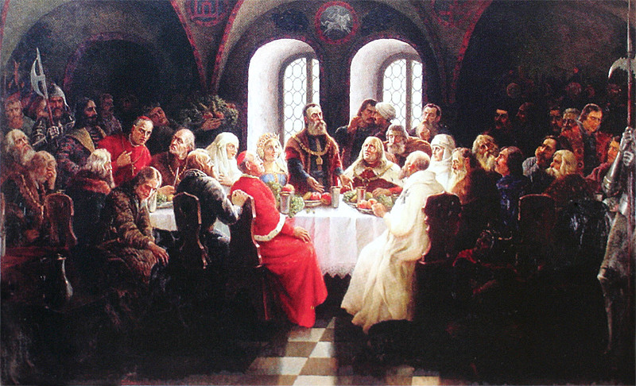
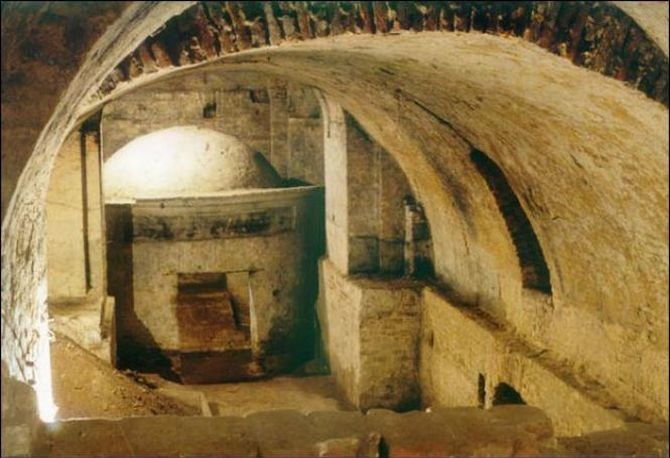
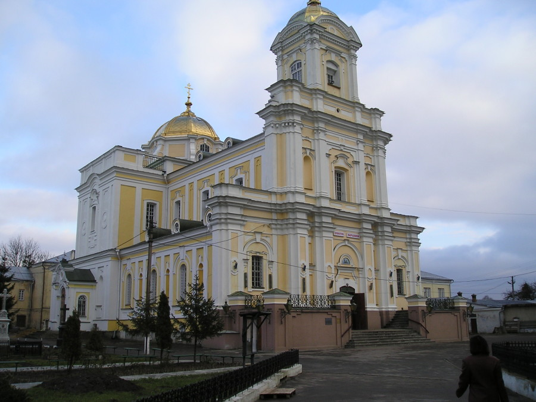
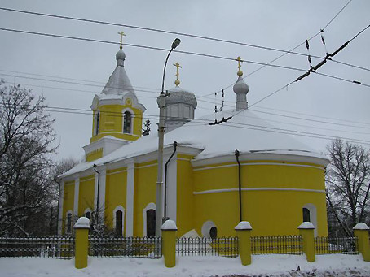

Луцьк – одне з найдревніших міст України. Його історія налічує близько 1000 років. Перша літописна згадка про Луцьк датується 1085 роком, від якого лучани рахують день народження свого міста.
Лучеськ Великий

Першу згадку про Луцьк знайдено в Іпатіївському літописі 1085 року, коли йшлося про міжусобні чвари між нащадками Ярослава Мудрого. Щоправда дослідники міста мають підстави стверджувати, що воно виникло приблизно 1000 року. Археологічні ж дослідження вказують на існування поселень на території міста ще до часів неоліту (ІІІ тис. до н.е.). Назву Луцька пов’язують із його розташуванням на повороті (луці) річки Стир. Є й інша версія: назва походить від імені Лука. Так звали вождя дулібів, який нібито заснував місто на острові, утвореному Стиром та його рукавами. Тепер на цьому острові — територія Державного історико-культурного заповідника «Старий Луцьк». За княжих часів Луцьк називали «Лучськ» або «Лучеськ», і лише за Литовської доби назва міста набула теперішньої форми.
З’їзд європейських монархів 1429 року
Після смерті князя Дмитрія-Любарта, місто стало улюбленою резиденцією великого князя Литви Вітовта. Він був войовничим і могутнім князем. Йому покорялися татари, він успішно воював як з німецькими рицарями, так і з Москвою, де княжив його зять. При ньому кордони Великого Князівства Литовського розширилися за рахунок земель Русі від Балтійського до Чорного моря, і воно стало чи не найбільшою державою в Європі.
На з’їзд, який відбувся в січні 1429 року, приїхали монархи та посли приблизно двадцяти країн Центральної і Східної Європи. Серед них імператор Священної Римської Імперії король німецький, чеський та угорський Сигізмунд, король польський Ягайло, король датський і шведський Ерік IV, магістр пруський Русдарх, магістр ліфляндський Альфрідус, а також великі князі: московський, тверський і рязанський; царі перекопської і заволзької Орд; молдавський воєвода; посли Римського Папи і візантійського імператора. Всі вони прибували в оточенні своїх дипломатів, охорони та прислуги, так що загальна кількість гостей у кілька разів перевищила чисельність лучан.
Для міста Луцька з’їзд також був важливою подією: він допомагав йому стати європейським містом, сприяв його благоустрою і розбудові.
Легенди і дійсність луцьких підземель
Під час досліджень археологи виявили підземелля та підземні ходи, які за їх ознаками та походженням можна розділити на три основні групи. Першу і найбільш чисельну з них складають підвали і льохи старовинних будинків. В Лучеську Великому ще від XV ст. будували чотири- і навіть п’ятиповерхові муровані будинки-кам’яниці. Причому два поверхи цих будинків були пивницями, тобто знаходилися під землею, а інші-на поверхні. Верхній підземний поверх називали підвалом, чи пивницею, в ньому зберігали переважно крамні товари або скрині з майном і дорогоцінностями. А нижній поверх був льохом, або холодником, тобто холодним підвалом. У такому підвалі часто робили приямок із дверима-лядою, в який весною складали лід, щоб він впродовж літа був холодним. Такий підвал був своєрідним холодильником, у ньому зберігали продукти харчування. Зазвичай ці двоповерхові підвали складалися з досить просторих кімнат і сходових кліток до них. Третього поверху в них немає і бути не може, бо там вже починається лінія рівня грунтових вод; тобто будь-який підвал, аби його копали глибше, неминуче був би заповнений водою.
Друга група овіяних легендами луцьких підземель- це, як не дивно, просто каналізація старовинних будинків-монастирів. Фактично від кожного монастирського будинку «Малого Риму Сходу» в бік найближчої річки чи оборонного рову йшли довгі вузькі каналізаційні тунелі. Ці обмуровані цеглою підземні ходи були настільки вузькими і невисокими, що по них, пригнувшись, заледве може пройти тільки одна людина при необхідності почистити каналізацію. Довжина їх була невеликою-від кількох десятків до кількох сотень метрів.
І, нарешті, третю, найменшу групу підземель складають кілька підземних виходів із замку Любарта. Зокрема, один із них виходив просто на луг, а інший- до річки Стир. Такі підземні ходи теж були вузькими і не довгими. Звичайно, що під річкою вони ніяк не могли проходити, бо були б повністю затоплені водою. Слугували ці підземні ходи для того, щоб таємно покинути оточений ворогом замок або швидко проникнути в нього ззовні. В документах вони називаються потайниками, або колодязями для схову від татар.
«Малий Рим Сходу»
Християнські храми-церкви, костели, монастирі, якими було щедро забудоване місто на луках. Під’їжджаючому до Луцька подорожньому відкривалася широка річкова долина з розташованим у ній містом. У ньому поміж оборонними стінами гостроверхими шатрами веж тулилися міськи двори, дворики, доми, будиночки і халупи. А посеред всієї цієї тісноти житлових будівель, мов Ноєві ковчеги, стояли храми. Сріблилися куполами, виблискували в сонячних променях золотистими хрестами, вигравали різнокольоровими вітражами вікон. Примикаючи до них, будинки священиків, монастирі, шпиталі, школи, і цвинтарі були огороджені парканами від гомінкого неспокійного міста.
У Верхньому замку стояла соборна церква Івана Богослова з двором владики, монастирським будиночком і некрополем князів та владик луцьких.
В Окольному замку розташовувалося сім храмів. Із них-чотири православні присвячені Святим: Катерині, Петру, Дмитру і Якову та три католицькі.
У самому місті були муровані монастирі домініканців із костелом Успіння Богородиці та школою, боніфраторів із костелом Святого Якова і шпиталем, кармелітів із прекрасно оздобленим декоративним ліпленням і розписами храмом Діви Марії.
У самому місті були муровані монастирі домініканців із костелом Успіння Богородиці та школою, боніфраторів із костелом Святого Якова і шпиталем, кармелітів із прекрасно оздобленим декоративним ліпленням і розписами храмом Діви Марії.
Луцьке братство
У 1596 році Луцький і Володимирський єпископ при підтримці Київського митрополита підписали в Бресті договір-унію з католицькою церквою. Таким чином, православна церква Русі-України була перетворена в греко-католицьку, або уніатську. Ця акція була проведена без дозволу патріарха і врахування волевиявлення православного духовенства і пастви. Однак так сталося, що в один день церковні владики забрали усі православні храми від громад і повертали тільки тим, хто переходив до унії.
Втративши свої храми, православна громада Луцька: купці й ремісники, священики, князі, пани і шляхта об’єдналися у православне братство. Разом було легше відстоювати своє право на віросповідання, а значить-на мову, письмо і культуру. У 1617 році Луцьке братство юридично оформилося у громадську організацію, прийняло статут і склало список своїх членів, який називався «каталогос».
Активна діяльність Луцького братства разом із братствами Львівським і Київським, палкі виступи депутатів державного сейму луцьких братчиків Лаврентія Древинського і Олександра Пузини змусили короля Польщі відновити діяльність православної церкви на землях Русі-України. Таким чином, Луцьке братство в ті тяжкі часи добре прислужилося своєму народові.
Проте у XVIII ст. зусиллями католицької держави православна церква Волині й Луцьке братство припинили своє існування. Їхні храми занепали і згодом були розібрані.
Pодина Косачів
Вперше родина Косачів приїхали до Луцька і прожевали в ньому з 1879 до весни 1882 року. Батька Лесі Петра Антоновича як державного службовця перевели сюди на посаду голови з’їзду мирових посередників.
Родина поселилася в колишньому колегіумі монастиря єзуїтів, в якому здавалися квартири для службовців. Саме тоді дев’ятирічна Леся написала свій перший вірш «Надія».

Навесні 1882 року сім’я Косачів переїхала до свого маєтку в селі Колодяжному.
Вдруге ця родина, яка вже почала відігравати помітну роль у громадському і культурному житті Волині, квартирувала в Луцьку в 1890–1891 роках. Цього разу родина Косачів проживала в гарному будиночку, який знаходився з іншого боку від Кафедрального костелу. Тут і були службові кабінети Петра Антоновича.
У 1891 році сім’я поїхала з Луцька.